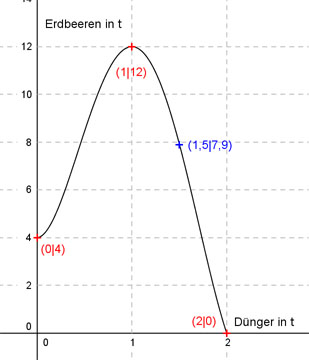

Aufgabe 140 In einer landwirtschaftlichen Versuchsstation hat man den Ertrag eines Erdbeerfeldes und die eingesetzte Düngermenge in t gemessen. Zur graphischen Darstellung dieses Sachverhaltes wird eine ganzrationale Funktion 4. Grades mit folgenden Bedingungen eingesetzt. Ungedüngt liefert das Feld minimal 4 t Erdbeeren, der Ertrag verdreifacht sich und wird maximal, wenn eine Tonne Dünger eingesetzt wird, beim Einsatz von 2 t sinkt der Ertrag wegen Überdüngung auf 0 t. (Der Graph liefert nur bis zu dieser Düngermenge brauchbare Ergebnisse). Welchen Ertrag erzielt man beim Einsatz von 1,5 t Dünger?  Allgemeine Form einer ganzrationalen Funktion 4. Grades: f(x) = ax4 + bx3 + cx2 + dx + e f’(x) = 4ax3 + 3bx2 + 2cx + d f’’(x) = 12ax2 + 6bx + 2c 5 Bedingungen: 1. Ungedüngt liefert das Feld minimal 4 t Erdbeeren bedeutet zum einen: f(0) = 4 --> a * 04 + b * 03 + c * 02 + d * 0 + e = 4 --> e = 4 2. Ungedüngt liefert das Feld minimal 4 t Erdbeeren bedeutet zum anderen: f’(0) = 0 --> 4a * 03 + 3b * 02 + c * 0 + d = 0 --> d = 0 3. Der Ertrag verdreifacht sich und wird maximal, wenn eine Tonne Dünger eingesetzt wird bedeutet zum einen: (e = 4 und d = 0 eingesetzt) f(1) = 12 --> a * 14 + b * 13 + c * 12 + 4 = 12 --> a + b + c + 4 = 12 | -4 a + b + c = 8 I 4. Der Ertrag verdreifacht sich und wird maximal, wenn eine Tonne Dünger eingesetzt wird bedeutet zum anderen: (d = 0 eingesetzt) f’(1) = 0 --> 4a * 13 + 3b * 12 + c * 1 = 0 --> 4a + 3b + 2c = 0 II 5. Beim Einsatz von 2 t sinkt der Ertrag wegen Überdüngung auf 0 t bedeutet: (e = 4 und d = 0 eingesetzt) f(2) = 0 --> a * 24 + b * 23 + c * 22 + 4 = 0 --> 16a + 8b + 4c + 4 = 0 |-4 16a + 8b + 4c = -4 III I * (-4) + III -4a - 4b - 4c = -32 16a + 8b + 4c = -4 -------------------- 12a + 4b = -36 IV I * (-2) + II -2a - 2b - 2c = -16 4a + 3b + 2c = 0 -------------------- 2a + b = -16 V IV + V * (-4) 12a + 4b = -36 -8a - 4b = 64 --------------- 4a = 28 |:4 a = 7 a = 7 in V eingesetzt: 2 * 7 + b = -16 14 + b = -16 |-14 b = -30 a = 7 und b = -32 in I eingesetzt. 7 - 30 + c = 8 -23 + c = 8 | +23 c = 31 Gesuchte Kostenfunktion: f(x) = 7x4 - 30x3 + 31x2 + 4 f(1,5) = 7 * 1,54 - 30 * 1,53 + 31 * 1,52 + 4 f(1,5) = 35,44 - 101,25 + 69,75 + 4 = 7,9 t gerundet